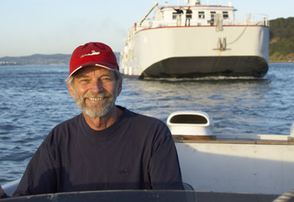

Information about the Research Vessel Transquest


See us on YouTube!
|
R/V Transquest is a submersible launch platform
for: The former flagship of the Lockheed Corporation's Ocean Research Division, this vessel is a twin diesel screw, 1967 Oceanographic SURFAC support ship with twin transom design. She will accommodate submarines up to 50' long and 50 tons. Transquest is a solid, well equipped and well maintained vessel that has been at the forefront of submersible activity. She served as the mothership of Lockheed's "DeepQuest" submarine then went on to 20 years of classified service with U.S. Navy Deep Submergence Rescue Vehicles (DSRVs) including Mystic, Sea Cliff, Turtle and Avalon.
|
|
Details: Auxiliary Equipment: |
|
At Work: Events:
Transquest in the News:
|

Condolences
to the family of Case Blazyk who passed away March 2016.

Case Blazyk, 2007. Photo by
Loren Earle Cruickshanks.
Ownership of the Transquest is in limbo as of August 2016.
For website information, email our Webmaster at the link below.
Last Update: August 2016
Web site developed by
Contact our Webmaster